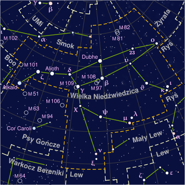

Największe gwiazdozbiory z krótkim opisem
Opis największych gwiazdozbiorów na niebie:
- Hydra - powierzchnia 1303 stopnie kwadratowe. Największy pod względem powierzchni gwiazdozbiór, po podziale Okrętu Argonautów, spośród wszystkich 88 i rozciąga się na ponad 1/4 drogi dookoła nieba. Głowa Hydry leży na południe od Raka i trochę na północ od równika niebieskiego, a ogon między Wagą i Centaurem, na południowej półkuli. Ptolemeusz umieścił go na swojej liście czterdziestu ośmiu konstelacji. Pomimo swojej wielkości Hydra nie ma wielu ciekawych obiektów, poza sześcioma gwiazdami tworzącymi jej głowę. W Polsce widoczny wiosną. Liczba gwiazd widocznych nieuzbrojonym okiem: około 130. Więcej informacji
- Panna - 1294 stopnie kwadratowe. Gwiazdozbiór zodiakalny, znany już w starożytności. Rozciąga się po obu stronach równika niebieskiego, między Lwem i Wagą. Jest to największy gwiazdozbiór zodiakalny i drugi co do wielkości gwiazdozbiór na niebie. Liczba gwiazd dostrzegalnych nieuzbrojonym okiem: około 95. W Polsce widoczny wiosną. W Pannie znajduje się najwięcej galaktyk na całym niebie. Więcej informacji
- Wielka Niedźwiedzica - 1280 stopnie kwadratowe. Gwiazdozbiór okołobiegunowy nieba północnego, a zarazem trzecia co do wielkości konstelacja nieba. Liczba gwiazd dostrzegalnych nieuzbrojonym okiem: około 125. W Polsce jest widoczny przez cały rok. Siedem najjaśniejszych gwiazd, często niesłusznie utożsamianych z Wielką Niedźwiedzicą, a stanowiących tylko część gwiazdozbioru, tworzy charakterystyczny i łatwy do odszukania na niebie układ Wielkiego Wozu, którego „dyszel” jest jednocześnie „ogonem” niedźwiedzicy. Więcej informacji 